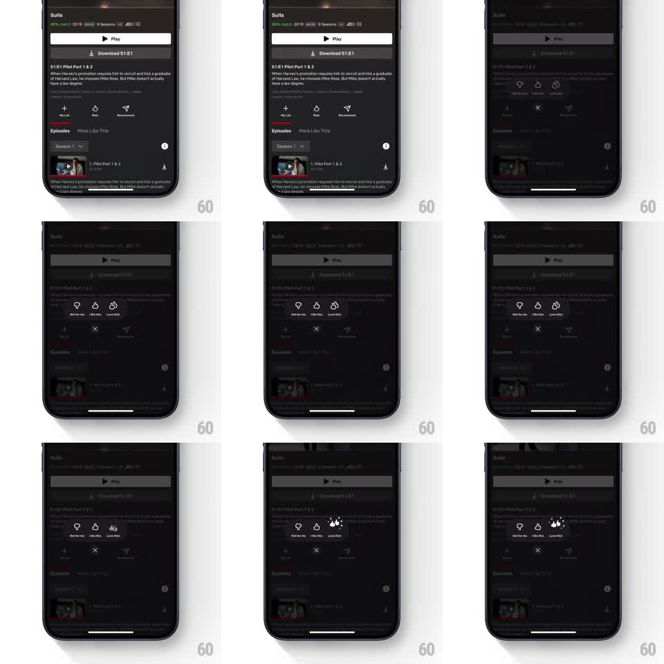

Media
Frame-by-frame

Rebuild this interaction 1:1: Netflix's rating popover - tapping Rate on a title sheet opens a springy three-thumb popover (Not for me / I like this / Love this!) with staggered pops and a particle burst on the top rating.

Rebuild this interaction 1:1: Netflix's rating popover - tapping Rate on a title sheet opens a springy three-thumb popover (Not for me / I like this / Love this!) with staggered pops and a particle burst on the top rating. ## Integration Integration: stack-agnostic spec - springs given as stiffness/damping, timed motions as duration + curve; map every value to your framework and animation library of choice. ## Scene A title detail sheet (Suits: Play, Download, episode list) dimmed behind a floating dark popover centered on screen: three thumb options in a row - "Not for me" (thumb down), "I like this" (thumb up), "Love this!" (double thumb) - each labeled beneath its icon. ## Motion spec Pattern: staggered spring popover with selection burst. - Tap Rate: the sheet dims (black scrim to ~60%, 200ms) and the popover scales in from the Rate button's location (scale 0.7 to 1, spring ~380/24), fading from 0. - The three options pop in staggered (50ms apart): each icon scales 0.5 to 1 with a bounce (spring ~480/22), labels fading up just after. - Tap an option: the chosen thumb bounces (scale 1 to 1.25 to 1, spring ~420/20) and fills white; "Love this!" fires a small burst of spark/paw-like particles around the icon (6-8 particles, 400ms life). - The popover then collapses back toward the Rate button (scale down + fade, 200ms), the scrim lifts, and the Rate control shows the chosen state (thumbs-up icon filled). - Tap the scrim or re-tap the current rating: popover dismisses with the same collapse; re-tapping an active rating clears it (icon returns to outline, 150ms). ## Calibration - The popover's transform origin is the Rate button - it must visibly grow out of and return to that spot. - The stagger is tight; total entrance under 350ms so the menu feels instant. ## Reduced motion Popover fades in centered; no stagger or burst. ## Don't miss - The double-thumb "Love this!" icon is visually distinct (two thumbs), and its burst is the only particle effect. - The detail sheet stays fully rendered under the scrim - no snapshot flattening.